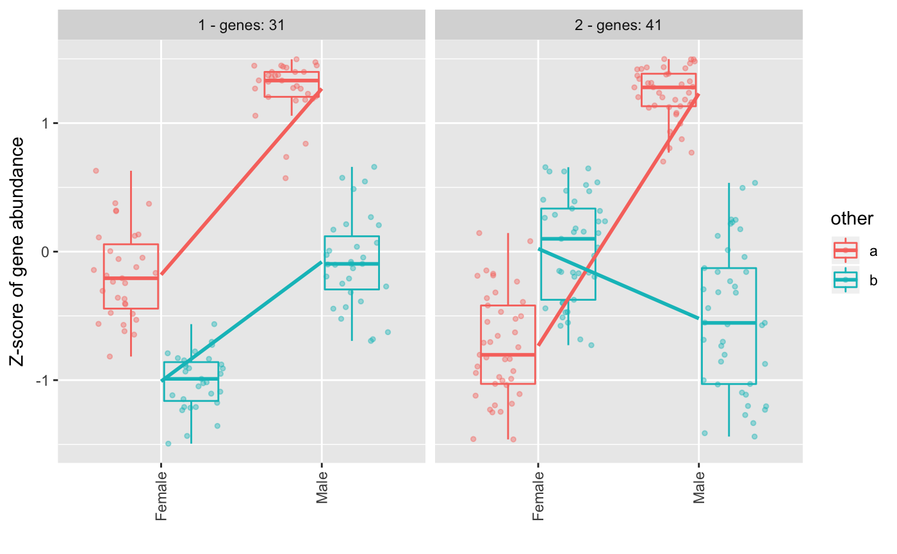
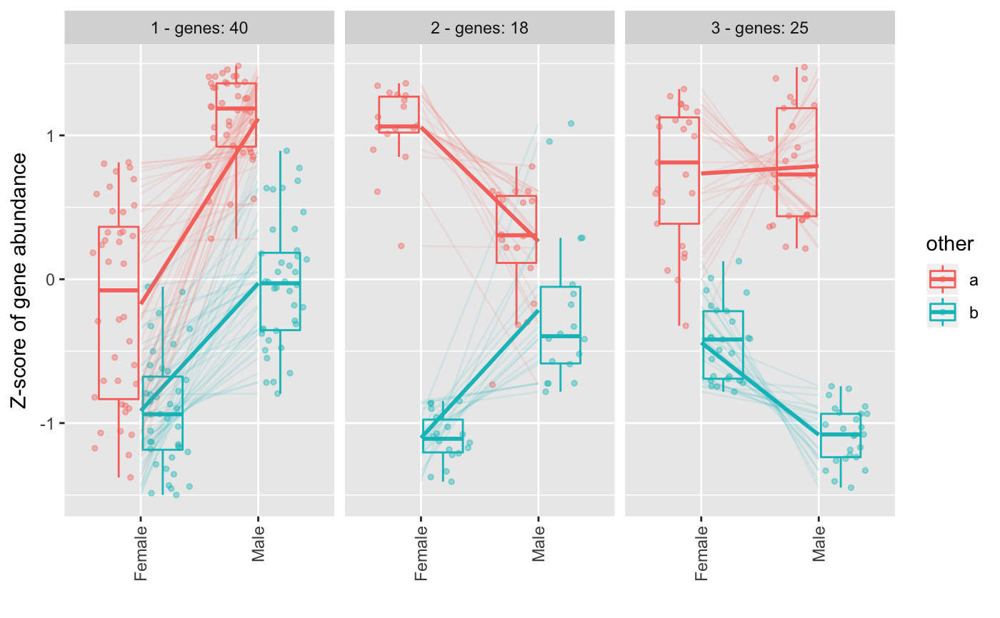

Plot clusters from degPattern function output
degPlotCluster.RdThis function helps to format the cluster plots from degPatterns().
It allows to control the layers and it returns a ggplot object that
can accept more ggplot functions to allow customization.
degPlotCluster(table, time, color = NULL, process = FALSE, points = TRUE, boxes = TRUE, smooth = TRUE, lines = TRUE, facet = TRUE, cluster_column = "cluster")
Arguments
| table |
|
|---|---|
| time | column name to use in the x-axis. |
| color | column name to use to color and divide the samples. |
| process | whether to process the table if it is not ready for plotting. |
| points | Add points to the plot. |
| boxes | Add boxplot to the plot. |
| smooth | Add regression line to the plot. |
| lines | Add gene lines to the plot. |
| facet | Split figures based on cluster ID. |
| cluster_column | column name if cluster is in a column with a different name. Usefull, to plot cluster with different cutoffs used when grouping genes from the clustering step. |
Value
ggplot2 object.
Examples
data(humanGender) library(SummarizedExperiment) library(ggplot2) ma <- assays(humanGender)[[1]][1:100,] des <- colData(humanGender) des[["other"]] <- sample(c("a", "b"), 85, replace = TRUE) res <- degPatterns(ma, des, time="group", col = "other", plot = FALSE)#>#>#>#>degPlotCluster(res$normalized, "group", "other")degPlotCluster(res$normalized, "group", "other", lines = FALSE)library(dplyr)#> #>#> #> #>#> #> #>#> #> #>#> #> #>#> #> #>#> #> #>#> #> #>#> #> #>#> #> #>#> #> #>library(tidyr)#> #>#> #> #>library(tibble) table <- rownames_to_column(as.data.frame(ma), "genes") %>% gather("sample", "expression", -genes) %>% right_join(distinct(res$df[,c("genes", "cluster")]), by = "genes") %>% left_join(rownames_to_column(as.data.frame(des), "sample"), by = "sample") %>% as.data.frame() degPlotCluster(table, "group", "other", process = TRUE)